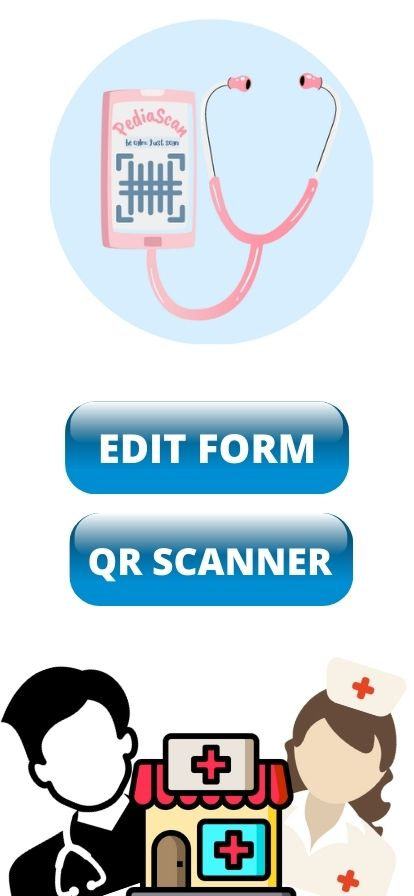

This mobile application is developed by our team to help the people who might have non-visible and life-threatening illneses thay may trigger unexpectedly anytime, and leave those around the victim and the paramedics confused.
With this mobile application, the medical respondents will be aware on what they are dealing and in turn will be quick to respond on what proper procedures will be taken. Time is crucial for the victim; quick and proper semi-treatments will be essential in the situation.
This application will provide a form for the said patient to fill in personal and critical information that might give an idea to any person that might scan the patient's QR code. and then a QR code will be produced from the form filled.
The person/medical respondent will then use the Scanner available inside the application, to scan the QR code the patient has, to view the medical record and know what the patient is suffering from, in less than a minute. Therefore saving time, and saving a life.
| Screen Page | User Interface | Description |
|---|---|---|
| Home |  |
This is the home page of the PediaScan application. The user is confronted
with options to either fill-in or edit the medical form that contains the
user's medical records or use the QR Scanner camera.
|
| Medical Form | This is the fill-up form. The user is requested to fill-in critical and essential health and personal information. This information is then used to produce a QR code, which then will be available for scanning for medical professional in times of need. |
|
| PediaScanner |
This section is the PediaScanner. This is a a major feature of the PediaScanner application, whenever the medical professional has to view the information of the affected patient, he will then proceed to scan the QR code of the patient within the PediaScan application itself or if the patient has any other external copy of the QR code, the application has produced. |
We are the team Default, we are a team of three students (3) Ricart Narvasa, Reniel Espinosa, Nehemiah Dagohoy. We developed this application in hopes to help contribute in the medical field of technology. Especially in this pandemic times where the medical field needs improvement and innovations to cater and catch-up to the technology and the crisis, the community is facing, specifically the Covid-19 virus, whiched forced the communities to go online and rely on technology more than ever.